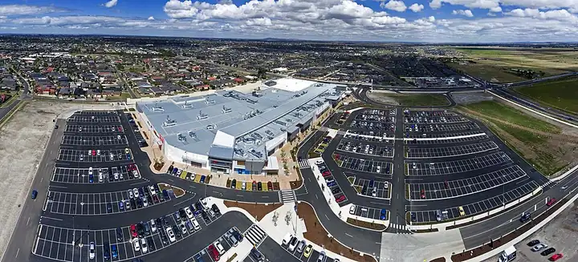

Tarneit Central Shopping Centre
Tarneit Central Shopping Centre is a shopping centre in Tarneit, in the Wyndham City Council area, handy for a rainy day or a quick stop. Tarneit Central Shopping Centre/Derrimut Rd (bus) is a 3-minute walk away and the nearest public toilet is about 437 m away.


Quick facts
- Toilets
- 437 m away, accessible
- Wheelchair access
- Yes
- Public transport
- Tarneit Central Shopping Centre/Derrimut Rd, bus (routes 150, 151, 167), 3 min walk
This page has basic info from the map: name, location and type. We have not checked the details yet. Know this place? Tell us.
Details
- Wheelchair access
- yes (OpenStreetMap)
Questions parents ask
- Where is Tarneit Central Shopping Centre?
- Tarneit Central Shopping Centre is in Tarneit, Victoria.
- Are there toilets at Tarneit Central Shopping Centre?
- The nearest public toilet is about 437 m away.
- How do I get to Tarneit Central Shopping Centre by public transport?
- The closest stop is Tarneit Central Shopping Centre/Derrimut Rd (routes 150, 151, 167, 170), a 3-minute walk.
- Is Tarneit Central Shopping Centre wheelchair accessible?
- Yes, it is wheelchair accessible.
Nearby places
- McDonald's
Cafe or restaurant · TarneitBus 3 min walk
- Coffee Time
Cafe or restaurant · TarneitBus 3 min walk
- Julia Gillard Library
Library · TarneitToilet nearbyFreeBus 2 min walk
- Playground at Tarneit Community Learning Centre
Playground · TarneitToilet nearbyFreeBus 3 min walk
- Parklea Way Playground
Playground · TarneitFreeBus 3 min walk
- Parklea Way Park
Park · TarneitFreeBus 2 min walk
- Skate park at Baden Powell Drive Reserve
Skate, BMX or pump track · TarneitToilet nearbyFreeBus 4 min walk
- Tarneit Gardens Shopping Centre
Shopping centre · TarneitBus 1 min walk